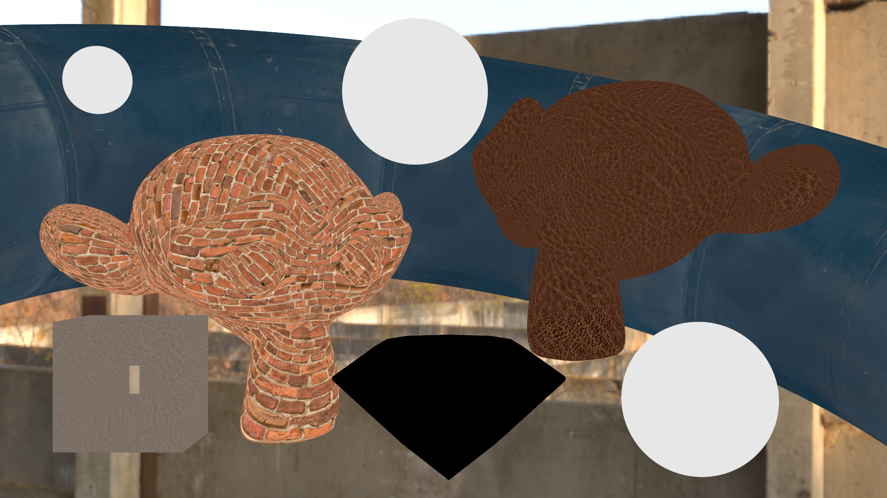

![Figure [image_interpolation_comparison]: Interpolation Mode Comparison](images/empty.png)
For the extension modes, I created a similar scene with UV coordinates outside the $[0, 1]$ range:
![Figure [image_extension_comparison]: Extension Mode Comparison](images/empty.png)
We can already get really nice results using a few texture maps (and the Disney BSDF). The following scene includes albedo, roughness, metallic and normal maps (acquired from Polyhaven[^Polyhaven]):
![Figure [image_pbr]: Disney BSDF using Albedo, Roughness, Metallic and Normal Map](images/pbr/material_preview_nori_denoised.png width=75%)
### Modified Files
File | Comments
:-------:|:------:
bitmap.h, bitmap.cpp | Bitmap class for file loading, file saving, image evaluation, etc.
texturecache.h, texturecache.cpp | Texture cache for image loading
common.h, common.cpp | Common utility functions (lerp, clamp, remap, etc.)
imagetexture.cpp | The image texture implementation
[Added & Modified Files for this Feature]
Note that I had to change a bunch of other files to conform to the new templated `Bitmap` class. Since there isn't any change in functionality, and those files are not relevant to this feature, I did not explicitly name them in the table.
## Perlin Noise
!!!
Feature ID: 5.4 - Procedural Textures
I added simple 3D perlin noise based on the PBRT-3[^PBRT_Noise] implementation, as well as a fractal Perlin variant. For the fractal Perlin noise we can supply the following parameters:
Parameter | Description | Default Value
----------|:-----------|:------------:
Vector3f p | Coordinates to evaluate | -
Vector2f scale | Noise scale | $[1, 1]$
int octaves | Number of Perlin layers | $4$
float lacunarity | Change of frequency between layers (multiplicative) | $2$
float persistence | Change of amplitude between layers (multiplicative) | $0.5$
Vector2f range | Range of the noise values | $[0, 1]$
int seed | Seed of the Perlin layers | $0$
I loop over the number of octaves, accumulating the noise value of all Perlin layers. The amplitude and frequency are updated accordingly, and I keep track of the total sum of all amplitudes. In the end I use this sum to normalize the values back to $[-1,1]$. Finally, the value gets remapped to the specified range.
```java
// Fractal Perlin Noise (Pseudocode)
fractalPerlin(x, y, z, octaves, lacunarity, persistence):
value = 0, amplitude = 1, frequency = 1, sum = 0
for i = 1 .. octaves:
value += perlin(x * frequency, y * frequency, z * frequency) * amplitude;
sum += amplitude;
frequency *= lacunarity;
amplitude *= persistence;
return value / sum
```
Since the Perlin noise is 3D and we only need two dimensions to evaluate the texture, I decided to just plug in the seed (scaled by some factor) into the `z` coordinate. This creates different noise patterns for different seeds.
### Validation Setup
I made a little application `perlingen` that gets built separately to Nori. It can be run with the following syntax:
```
./perlingen
![Figure [perlin_roughness]: Example of Perlin Noise Controlling a Non-Color Parameter (Roughness)](images/empty.png)
### Modified Files
File | Comments
:-------:|:------:
bitmap.h, bitmap.cpp | Bitmap class for file loading, file saving, image evaluation, etc.
noise.h, noise.cpp | (Fractal) Perlin noise implementation
common.h, common.cpp | Common utility functions (lerp, clamp, remap, etc.)
perlintexture.cpp | The Perlin texture implementation
perlingen.cpp | The Perlin noise generation tool
[Added & Modified Files for this Feature]
## Normal Mapping
!!!
Feature ID: 5.8 - Normal Mapping
After some consideration, I decided to implement normal mapping directly in the shape class. A more general approach would be to implement a normal mapping BSDF, but since each shape can only have one material, I decided to go with the simpler approach. This way, I can keep the shading frame computation in one place and don't have to worry about it in the integrators, BSDFs, etc.
### Implementation
The normal map is loaded as an image texture. The `eval` method of the image texture returns a `Color3f` value, which is then remapped to a normal vector. This vector is in tangent space, so we have to transform it to world space using the default shading normal. A new shading frame is then computed using the transformed normal as the new shading normal. This operation depends on the tangent and bitangent as well, so I had to make sure that these are continuous across the surface. I used the approach discussed in the PBRT-3[^PBRT_Trimesh] book. Given the intersection point $p$ (in barycentric coordinates) and the UVs, I compute the partial derivative $\frac{\partial p}{\partial u}$ and use a cross product with the normal to get the bitangent. The tangent is then calculated as the cross product of the normal and the bitangent. This ensures that the tangent, bitangent and normal form an orthonormal basis.
### Validation
I prepared a simple scene with an angled plane and a normal map. The normal map was taken from a brick material from Polyhaven[^Polyhaven].
![Figure [normal_bricknormals]: Brick Normal Map](images/normalmap/bricknormals.png width=75%)
![Figure [normal_comparison]: Comparison of a Simple Scene with Normal Mapping (Mitsuba 3 vs. Mine)](images/empty.png)
There are some slight discrepancies in the two renders, but overall the results are quite similar. In a more complex scene, these differences would probably not be noticeable.
One advantage of directly modifying the shading frame is that when we render the normal buffer (e.g. for denoising), we get all the details of the normal map:
![Figure [normal_normal_buffer]: Normal Buffer of the Last Scene](images/normalmap/cbox_nori_normals.png width=75%)
### Modified Files
File | Comments
:-------:|:------:
bitmap.h, bitmap.cpp | Bitmap class for file loading, file saving, image evaluation, etc.
common.h, common.cpp | Common utility functions (lerp, clamp, remap, etc.)
mesh.cpp | Shading frame computation
shape.h, shape.cpp | Additional fields for the `intersection` struct and for the `Shape` class
[Added & Modified Files for this Feature]
## Environment Map Emitter
!!!
Feature ID: 15.3 - Environment Map Emitter
I chose to implement this feature as it is pretty much crucial for realistic lighting. In fact, in the end this was the only emitter I used in my final scene. My implementation differs from the one we saw in the lecture, as I decided to use a single discrete PDF to importance sample the entire environment map.
### Importance Sampling
An environment map is 2-dimensional, but since it consist of a fixed number of pixels, I thought that it would be a good idea to flatten the whole image into a 1-dimensional array. This corresponds to sampling the joint PDF and is equivalent to the marginal/conditional discrete PDF approach, but it is much easier to implement (and uses slightly less memory).
#### Marginal/Conditional Discrete PDF approach
This is the approach we saw in the lecture. First, we sample a row of the environment map based on a discrete marginal PDF. Then, we sample a pixel inside that row based on a conditional PDF corresponding to that row. Assuming an image of size $w \times h$, we require $\mathcal{O}(\log w)$ time to sample a row and $\mathcal{O}(\log h)$ time to sample a pixel inside that row, since we can use a binary search to sample. The total runtime is $\mathcal{O}(\log w + \log h) = \mathcal{O}(\log(w \cdot h))$. The total memory usage is $h$ floats for the marginal PDF and $w\cdot h$ floats for the conditional PDFs.
#### Single Discrete PDF approach
In this approach, I simply put all PDF values of the environment map into a single discrete PDF. Since we know the dimensions of the image, we can easily calculate the index of a pixel given its coordinates and vice versa. The runtime to sample a pixel is $\mathcal{O}(\log(w \cdot h))$. The memory usage is $w \cdot h$ floats. In conclusion, this approach is equally fast and uses slightly less memory. The implementation is also much simpler.
#### Comparison of the two Approaches
Both approaches result in the same distribution of samples (up to randomness):
![Figure [envmap_sampling]: Comparison of the Sampling Strategies](images/empty.png)
This HDRI (and all that follow) were acquired from Polyhaven[^Polyhaven].
### Implementation
I load the environment map as a bitmap and compute the discrete PDF using the luminance values of the pixels. I do this with a single `bitmap.foreach()` call, which takes in a lambda function that is called for each pixel. To make it resolution-independent, I used a normalization term I discovered in the paper *Monte Carlo Rendering with Natural Illumination*[^Envsample]. I also provide the option to disable importance sampling which sets all intensities to 1, leaving just the sin term. This is only used for comparison.
Converting between directions $\omega_i$ and angles is done via a mapping to spherical coordinates. Since I use equirectangular environment maps, mapping from angles to UV coordinates is as simple as rescaling them to the $[0, 1]$ range.
To incorporate it into the integrators, I added a `evalEnvironment` method to the `Scene` class. For rays that go off to infinity, this method gets called. If there is no environment map, the method returns black, just like before. Otherwise, it evaluates the environment map at the direction of the ray and returns the radiance value. Sampling the environment map is already done in the random emitter sampling step in the integrators that support emitter sampling. For BSDF sampling, I compute the pdfs and weights just like any other emitter.
### Validation
For this first comparison, I chose a environment map with a small, really bright sun. This points out the difference between importance sampling and uniform sampling:
![Figure [envmap_sampling_comparison]: Environment Map Sampling Comparison](images/empty.png)
And comparing to Mitsuba 3:
![Figure [comparison_envmap]: Environment Map Comparison](images/empty.png)
My implementation seems to produce slightly brighter images, but the overall results are quite similar and importance sampling is definitely working. Also, Mitsuba 3 shows a black area in the brightest part of the reflection of the mirror sphere, which doesn't seem right.
### Modified Files
File | Comments
:-------:|:------:
bitmap.h, bitmap.cpp | Bitmap class for file loading, file saving, image evaluation, etc.
common.h, common.cpp | Common utility functions (lerp, clamp, remap, etc.)
envemitter.cpp | Environment map emitter implementation
direct_ems.cpp, direct_mats.cpp, direct_mis.cpp, path_mats.cpp, path_mis.cpp | Incorporating the environment map into the integrators
[Added & Modified Files for this Feature]
## Blended BSDF
!!!
Feature ID: 5.9 - Simple Extra BSDF
Initially I only wanted to implement an opacity mask BSDF, but since I implemented this via blending, I decided to just stick with the blended BSDF. The opacity mask BSDF is just a special case of the blended BSDF where one of the nested BSDFs is a transparent BSDF.
### Implementation
The blended BSDF is a simple weighted sum of two BSDFs. The weights are determined by the blending factor, which can be a constant or a grayscale texture. The `eval` method calls the `eval` method of both nested BSDFs and returns the weighted sum of the resulting radiance values. For the `sample` method, I modeled it as a BSDF with two lobes and probabilistically pick one of them based on the blend factor. I then call the `sample` method on the chosen BSDF. The `pdf` method returns the weighted sum of the PDFs of the nested BSDFs.
Since the weights add up to 1, we can simplify all the weighted sums with a single call to the `lerp` function.
### Double-Sidedness
There are a lot of plants in my scene, and most of them are modeled with single-sided leaves. Since all plant materials require an opacity mask (blend of transparent and other BSDF), I decided to make the blended BSDF double-sided, instead of adding a separate double-sided BSDF. If $\omega_i, \omega_o$ point beneath the surface (i.e. the normal is flipped/the backside is hit), then the `z` component gets flipped. This way, the nested BSDFs are evaluated and sampled as if they were double-sided.
### Transparent BSDF
Not strictly part of this feature, but since I solely use the blended BSDF for opacity masks, I decided to have this section here. I implemented the transparent BSDF as a simple delta BSDF that sets the outgoing direction to the negative of the incoming $\omega_o = -\omega_i$. This is not optimal, as it creates much more noise, but it is very easy to implement. Ideally, an opacity mask would be implemented at the intersection level to reject rays that hit the transparent BSDF.
![Figure [blended_transparent]: A Sphere with a Transparent BSDF (you just have to trust me it's there)](images/blended/transparent.png width=75%)
### Validation
In the following scene, I blend between a matte red material and a glossy blue material based on a noise texture:
![Figure [blended_comparison]: Blended BSDF Comparison](images/empty.png)
There are some visible artifacts in my implementation. It almost seems as if the `blendFactor` is somehow quantized (which it is not). I'm not sure what causes this. Blending with a constant value between those same materials yields the following:
![Figure [blended_lerp]: Blending between two Materials with a blendFactor ranging from 0 to 1](images/blended/grid_nori_denoised.png)
This seems about right.
Setting one of the nested BSDFs to a transparent BSDF emulates an opacity mask which is useful for plants. Notice the holes in the leaves (acquired from Gscatter[^Gscatter]):
![Figure [blended_plant]: Using an Alpha Mask (left) to blend between a Transparent BSDF and a plant material (right)](images/empty.png)
### Modified Files
File | Comments
:-------:|:------:
bitmap.h, bitmap.cpp | Bitmap class for file loading, file saving, image evaluation, etc.
common.h, common.cpp | Common utility functions (lerp, clamp, remap, etc.)
blended.cpp | Blended BSDF implementation
transparent.cpp | Transparent BSDF implementation
[Added & Modified Files for this Feature]
## Disney BSDF
!!!
Feature ID: 15.5 - Disney BSDF
I chose to implement the Disney BSDF, as pretty much every material in my scene can be represented by it. I didn't know which parameters were important, so I just implemented all of them except for anisotropy.
### Implementation
I followed the original paper[^Disney_BRDF_Paper] and the BRDF Explorer[^Disney_BRDF_Explorer] implementation as a starting point for the `eval()` method. From this, I derived the `sample()` and `pdf()` methods, similarly to how we derived the microfacet model during the programming assignments.
#### Helper Functions
To make the implementation simpler and more readable, I added some helper functions. They include:
- `getTintColor`: Divides a color by its luminance, thereby isolating the hue and saturation
- `SchlickFresnel`: Computes the Fresnel term using the Schlick approximation
- `GTR1`: Generalized Trowbridge-Reitz distribution with $\lambda = 1$
- `GTR2`: Generalized Trowbridge-Reitz distribution with $\lambda = 2$
- `SmithG_GGX`: Smith's shadowing-masking function (GGX)
#### Diffuse/Subsurface Lobes
The diffuse and the subsurface lobes are computed very similarly, through a product of two linear interpolations based on the Fresnel terms. The diffuse reflectance goes from 1 at normal incidence to around 0.5 at grazing angles. It's not always 0.5, as it depends on the roughness to account for retro-reflection. The subsurface reflectance is based on the Hanrahan-Krueger model and is implemented very similarly to the diffuse reflectance.
In the end I lerp between the two reflectances based on the `subsurface` parameter and multiply it with the base color. This provides the diffuse lobe.
#### Sheen
The sheen lobe is just a simple Fresnel term multiplied by the `sheen` parameter and tinted by the sheen color. The sheen color is a lerp between white and the tint color based on the `sheenTint` parameter. And finally, the tint color is just the base color passed through the `getTintColor` function.
#### Specular
The specular lobe is a standard microfacet lobe based on three functions $D, F, G$. In this case $D$ is the GTR-2 distribution, $G$ is the Smith shadowing-masking function and $F$ is the specular Fresnel term. The Fresnel term is a lerp between the specular color and white. The specular color depends on the base color and the `specularTint` and `metallic` parameters.
#### Clearcoat
The clearcoat lobe is very similar to the specular lobe, but uses the GTR-1 distribution instead. Additionally, many parameters are set to fixed values, such as the alpha parameter for the shadowing-masking function. The alpha parameter for the GTR-1 distribution is not based on the roughness, but is simply a linear interpolation between 0.1 and 0.001 based on the `clearcoatGloss` parameter. The clearcoat lobe is generally much weaker than the specular lobe, as it is scaled by 0.25 and the `clearcoat` parameter.
#### Putting it all together
In the end, I return a sum of all the lobes. The diffuse lobes, that is the diffuse and sheen lobes, get weighted by `1-metallic`. The specular and clearcoat lobes don't have any weight, so the final result is:
```cpp
return (diffuse + sheen) * (1 - metallic) + specular + clearcoat;
```
I decided to add texture support to the `baseColor`, `metallic` and `roughness` parameters, as many assets require these, and the others are generally just constants.
#### Sampling
Looking at the final combined lobe `(diffuse + sheen) * (1 - metallic) + specular + clearcoat` I noticed that I can easily derive the weights for the lobes. The diffuse and sheen lobes are weighted by `1-metallic`, while the specular and clearcoat lobes have a constant weight of 1. Actually, since the clearcoat lobe is scaled by 0.25, the weight should also be 0.25 to account for the weaker influence. With these weights set, I probabilistically pick one of the lobes and sample it. For the diffuse lobe I use cosine weighted hemisphere sampling, while for the specular and clearcoat lobes I use the corresponding warps for the GTR distributions. Note that these distibutions will give us the half-vector $\omega_h$, so we need to reflect $\omega_i$ around $\omega_h$ to get the outgoing direction $\omega_o$.
I don't specifically sample the sheen lobe, as it is generally very weak and should already be well sampled by the diffuse lobe sampling.
#### PDF
I compute the weights for the three lobes that I sample (diffuse, specular, clearcoat) and return a weighted sum based on the weights mentioned above. Again, the GTR distributions will give us a PDF with a different measure, so we need to account for that via the Jacobian.
### Validation
I validated my implementation through statistical tests as well as visual comparisons.
#### Chi^2-Tests
To test out the GTR1 and GTR2 distributions used for clearcoat and specular lobes, I ran some $\chi^2$-tests using the `warptest` application. I tested it with the `alpha` parameter set to 0.03, 0.22, 0.51 and 0.97, for both distributions.
![Figure [disney_gtr1]: GTR1 Distribution with Alpha = 0.03, 0.22, 0.51, 0.97](images/disney/GTR1.png)
![Figure [disney_gtr2]: GTR2 Distribution with Alpha = 0.03, 0.22, 0.51, 0.97](images/disney/GTR2.png)
#### Visual Comparisons
In the following comparison, I rendered a bunch of spheres with different Disney BSDF parameters ranging linearly from 0 to 1. The spheres are lit by an environment map emitter. Note that all spheres were rendered separately and later combined into the image grid, so there is no interaction between the spheres.
I highlighted the parameters I selected for grading in yellow.
![Figure [disney_grid]: Disney Grid Comparison](images/empty.png)
Overall, it matches quite closely. But there are a few key differences:
- Mitsuba seems to completely disable specular reflections for `specular=0`, while my implementation still has some slight reflections.
- My renders are a bit brighter, but this is an issue of the environment emitter.
- The clearcoat reflections are much less pronounced in my implementation.
The effects of `subsurface` and `sheen` are not very noticeable, as they are very subtle. To see the effects, consider the following two comparisons, where we can see them side by side. Also notice that the brightness is much more consistent, as most of the light comes from area emitters (and not the environment).
![Figure [disney_subsurf]: Subsurface Comparison](images/empty.png)
![Figure [disney_subsurf]: Sheen Comparison](images/empty.png)
The Disney BRDF has a nice property that all parameters are fairly perceptually uniform. This means that we can linearly interpolate between two materials and the result will look like a blend of the two. In the following scene, I interpolated between four different materials (in the corners). Note that the RGB color space is not perceptually uniform, so the colors will not blend as nicely as the other parameters.
![Figure [disney_lerp_grid]: Linearly interpolating the Disney BRDF Parameters](images/disney/Disney_lerp_grid.png)
Finally, lets look at a material where the color, roughness and metallic parameters are driven by an image texture:
![Figure [disney_pbr]: Disney BSDF using Albedo, Roughness, Metallic and Normal Map](images/pbr/material_preview_nori_denoised.png width=75%)
## Intel's Open Image Denoise Integration
!!!
Feature ID: 5.7 - Intel's Open Image Denoise Integration
Probably the most "bang for your buck" feature. Having a high quality denoiser saved me so much time during development and testing. And the final renders also look so much better.
### Integration
I made a seperate application for denoising. Given a path to an EXR file, it will read it and fill the oidn color buffer. If provided, it will also fill the albedo and normal buffers. The denoiser is then run and the result is saved to an EXR and a PNG file. I used a pre-built binary of the Intel Open Image Denoise library[^OIDN] that I could link into my application.
The denoiser is run with the following command:
```bash
./build/denoiser PATH_TO_EXR [PATH_TO_ALBEDO] [PATH_TO_NORMAL]
```
### Attribute Integrator
For better denoising results, one can provide additional albedo and normal information to the denoiser. I created a new integrator `AttributeIntegrator` for rendering all kinds of extra information, like normals, tangents, UVs, albedo etc. These are really useful for debugging and post-processing, such as denoising.
In the documentation of Intel's Open Image Denoise, it is mentioned that for the albedo and normal buffers, one should follow specular light paths until the first non-specular hit. This makes sense, because for something like a mirror, we would like to have the extra information to properly denoise the reflection. However, I did not implement this, since I don't really have a lot of purely specular materials in my final scenes. All attributes are evaluated at the first hit.
#### Albedo
The albedo buffer stores the color of all surfaces independent of illumination and viewing angle. For this I added a new method `BSDF::getAlbedo()` to query the albedo of a surface. For example, in the Disney BSDF, this method just returns the `baseColor` at the given UV coordinates. The default return value is zero/black.
For camera rays going off to infinity, I evaluate the environment map (if there is one) and clamp the results to $[0, 1]$, as the albedo buffer shouldn't contain any HDR information (I think).
### Validation
The following scene contains many different materials, intensities and surface properties. It was rendered at only **4 spp**. The comparison shows the noisy image, the denoised image from just the color buffer, the denoised image from image, albedo and normal buffers, and one where the image was rendered at double the resolution (4k), denoised and downsampled (using bicubic interpolation).

![Figure [oidn_comparison]: Denoising Comparison](images/empty.png)
As is pretty evident from the comparison, the best results is from the method with albedo and normal buffers. The other methods lose a lot of detail, but in some regions of the image, the 4k super-resolution approach also works pretty well.
For reference, this is what the albedo and normal buffers look like:

![Figure [oidn_buffers]: Albedo & Normal Buffers](images/empty.png)
The great thing about the denoiser is that it retains all HDR information, so the denoised image can be further processed. In the following example I applied some bloom and tonemapping:
![Figure [oidn_postprocess]: Denoised Image with Bloom & Tonemapping](images/oidn/brick_monkey_4spp_denoised_postprocessed.png)
This already looks quite nice. And this is still just **4 spp**!
### Modified Files
File | Comments
:-------:|:------:
bitmap.h, bitmap.cpp | Bitmap class for file loading, file saving, image evaluation, etc.
common.h, common.cpp | Common utility functions (lerp, clamp, remap, etc.)
attribute.cpp | Attribute integrator for albedo & normal buffers
disney.cpp, diffuse.cpp, microfacet.cpp | Implementation of `getAlbedo` for non-specular BSDFs
denoiser.cpp | Denoising application
[Added & Modified Files for this Feature]
# Extra Features
In this section I'm going to showcase all the additional features I implemented. These are not part of the original feature list, but along the way I thought they would be useful or interesting to implement.
## Validation Framework
From playing way too much [Factorio](https://www.factorio.com/), I learned that **automation is key**. I implemented a whole validation framework that generates scenes, renders them, denoises them and compares the results. This way I can easily validate new features with just a few lines of code.
### Scene Generation
I implemented a scene generation framework that allows me to easily create scenes with different objects, materials, textures, etc. I can also set the quality of the scene, which will be used to set the number of samples and the resolution. Behind the scenes, the scene is stored as a Python object, which can be converted to a Nori scene XML file. Using the `nori_to_mitsuba` script, I can convert the Nori scene to the corresponding Mitsuba scene for comparison.
For many scenes I require the same things (e.g. an environment emitter, or a cornell box). I implemented a scene library that contains a few of these scenes. I can then easily add objects to these scenes and generate the final scene. For resources, I have a library of materials, textures and objects that I can use. A call to `add_resource` registers the resource and returns a path to it. This way I don't have to worry about any relative paths.
```py
# Validation Example
from valtools.validation import ValidationSuite
from valtools.scenegen import Scene, xmltag
from valtools.scenelib import SceneLibrary
def main():
# Create a validation suite
val = ValidationSuite("example")
# Load an empty scene (just the camera)
scene = SceneLibrary.empty()
# Set the quality of the render
scene.set_quality("medium")
# This is equivalent to
# scene.set_resolution(512, 512)
# scene.set_spp(32)
# Add a sphere to the scene
scene.add_object("sphere", "mesh", type="sphere", children=[
xmltag("point", name="center", value="0 0 0"),
xmltag("float", name="radius", value="0.5"),
xmltag("bsdf", type="dielectric")
])
# Register the environment map as a resource
envmap_path = val.add_resource("reinforced_concrete_01_4k.exr")
# Add an environment emitter to the scene
envmap = xmltag("emitter", type="envmap", children=[
xmltag("string", name="filename", value=envmap_path),
])
scene.add_tag_object("envmap", envmap)
# Generate the scene for Nori and Mitsuba
val.generate_scene(scene, "nori", "mitsuba")
...
```
This will create scene XML files for both Nori and Mitsuba.
### Rendering & Denoising
The `ValidationSuite` class keeps track of all scenes. With a single call to its `render()` method, it executes the corresponding commands of the renderers for each scene. Similarly, the `denoise()` method will denoise any rendered images. If I'm working on a feature like denoising, I don't want to render the scene every time I run the validation suite. By default, the suite will keep track of the scene files and only render them if they have changed. This can be disabled by calling `val.render(force=True)`.
Continuing with the example from above:
```py
def main():
...
# Render and denoise
val.render()
val.denoise()
...
```
This will render the scene with Nori and Mitsuba, denoise the images and save them to the validation suite render directory.
![Figure [val_example]: The Example Scene generated via the Validation Suite rendered with "final" quality preset (1024 spp)](images/validation/empty_nori_denoised.png width=75%)
### Comparison
I thought that I could also automate the comparison itself. For this, I implemeted a few metrics to measure the differences between two images. These consist of the error, the mean squared error, the structural similarity index (SSIM) and color difference $\Delta E$. For the color difference, I used the Euclidean distance in the Oklab[^Oklab] color space, as it is perceptually uniform. To make it more robust to noise, I blur the images with a Gaussian filter before computing the metrics.
Calling `val.compare_renders()` will match up all rendered images (between Nori and Mitsuba) and compare them. The resulting metrics are saved to a text file, along with a verdict:
```
Reference: empty_mitsuba
Rendered: empty_nori
Raw: {'error': -0.15524648, 'squared_error': 0.15476657, 'ssim': 0.6231261, 'color_difference': 0.218538708973123}
Blur: {'error': -0.15524645, 'squared_error': 0.09235317, 'ssim': 0.40019608, 'color_difference': 0.21886978538225144}
=> Verdict: FAIL, Color difference is too high.
```
In the end, I didn't use this feature as much as I thought I would, as visual inspection is still the best way to compare images. It also would've required a lot of fine-tuning to get the metrics and the verdict right. However, it was fun to implement and I think it's an interesting concept, hence why I'm showcasing it here.
### Conclusion
The validation framework took me a very long time to implement. I even decided to rewrite the entire thing at some point. Still, I believe it was worth it, as it saved me a lot of time during development and testing. Also, for many features, I could just run the validation scripts with the quality set to "final" and get the final results for the report.
This section was purposefully kept brief, as there are many more details that I could go into. For further information, you can refer to the "documentation" I wrote for this feature at `validation/valtools/README.md`.
## Post Processing
This is probably my favorite feature. I implemented a post-processing/compositing pipeline that allows me to apply various effects to the rendered images. To determine the order of the effects, I thought about where the physical counterpart would occur in a real camera. For instance, the bloom effect is applied before tonemapping, as the bloom effect is caused by the lens of the camera, while tonemapping is done by the sensor. I'll present the effects in the order they are applied.
To provide a simple interface, I decided to use TOML files to specify the post-processing configuration. I chose TOML because it is much more human-readable than XML. To parse TOML files, I use the `toml++` library[^TOML].
### Bloom
When you take a photo of a really bright object, you will often see a hazy glow around it. This is because the lens (and the sensor) of the camera are not perfect and light scatters around. This phenomenon is called bloom. To emulate this effect, the general approach is to apply a blur to the bright areas of the image and then add it back to the original image. I started with a simple Gaussian blur:
![Figure [post_gauss_bloom]: Simple Gaussian Bloom (Tonemapped with AgX)](images/empty.png)
This looks a bit underwhelming. There is some nice glow around the bright areas, but it falls off very quickly and looks very unrealistic. Increasing the size of the blur kernel doesn't help much, as it just spreads out the glow, disconnecting it from the bright objects. I needed a better approach, some kind of blur with a really long tail. I experimented a bit and found that by stacking a few gaussians with different sizes, I could achieve exactly this kind of blur. However, convolving an image with a big kernel is very expensive, even when using a separable filter. At this point, I did some research into real-time bloom effects and found this very insightful talk on the topic: *Next Generation Post Processing in Call of Duty: Advanced Warfare*[^Bloom].
#### Multi-Layer Approach
Instead of increasing the Gaussian kernel, why not decrease the size of the image? By downscaling an image, blurring it and upscaling it again, we can achieve a similar effect to a large Gaussian blur. This works pretty well, as the blur gets rid of the high-frequency information anyway, so we don't lose much detail. Based on the approach in the talk, I implemented my own, simplified version of the effect. For a given number of layers, I downsample the thresholded image by a factor of 2, blur it with a Gaussian kernel, upscale it again and add it to a (initially empty) bloom buffer. I use bilinear interpolation for both down- and upscaling. This results in artifacts in some cases, but it's generally very fast and looks quite good.
Before adding the bloom buffer back onto the image, I normalize the values to ensure consistency. Otherwise, it would become brighter and brighter with each layer. The way I do this is by keeping track of the maximum intensity of the raw image and the bloom buffer. I then scale the bloom buffer by the ratio of the maximum intensities. Finally, I multiply the bloom buffer by a intensity factor and add it to the raw image.
#### Number of Layers
The number of layers is determined by $\lfloor\log_2(f\cdot\frac{h}{r})\rfloor$ where $h$ is the height of the original image, $r$ is the radius of the gaussian kernel, and $f$ is a factor of how big the bloom should be (at most, since it is rounded down). For example, if $f=0.5$ then the bloom will be half the size of the image (height) or less. I derived this with the following resoning: The effective max radius is $2^n\cdot r$ where n is the number of iterations, since each iteration halves the size of the image (effectively doubling the radius of the kernel). by definition, this max radius should be less than $f\cdot h$. I then solved for n, which gives me the number of layers.
This works somewhat well, but it still depends a bit on the image resolution, because we cannot have any fractional layers.
![Figure [post_gauss_bloom]: Multi-Layer Bloom (Tonemapped with AgX)](images/empty.png)
This looks much better. The glow falls of much more naturally. The key to a good bloom effect is to not overdo it. It should be subtle and not distract from the main image.
#### Implementation
I extended the `bitmap` class with yet another useful method: `convolve_separable()`. For kernels, I took the `rfilter` class that is already implemented in Nori, as it already has a Gaussian filter pre-implemented. Since the Gaussian filter is separable, it can be applied in two passes, greatly increasing performance. Additionally I added a `resample()` method to the `bitmap` class, which uses the bitmap's interpolation mode to resample the image.
### Vignette
Next up is the vignette effect. To my knowledge, this also happens in the lens of the camera. Light in the corners of the image tends to fall off and become darker, manifesting as a darkening of the corners. This was fairly straightforward to implement. I compute a vignette mask based on the distance to the center of the image to each pixel and multiply the image with it.
![Figure [post_vignette]: Simple Vignette (Slightly Exaggerated)](images/empty.png)
Again, the key is subtlety. A vignette should guide the viewer's eye to the center of the image, not distract from it.
### Tonemapping
The camera sensor converts light measurements into colors. This reminded me of tonemapping, hence why this effect sits right here after blooming and vignetting. A renderer provides the raw radiance values, which often are outside the $[0, 1]$ range. If we just clamp the result, we're throwing away all of this beatiful HDR information. Tonemapping is the process of converting these high dynamic range values into a low dynamic range image that can be displayed on a screen. I implemented Reinhard[^Reinhard], Stephen Hill's ACES[^ACES] and AgX[^AgX] tonemapping. For ACES and AgX, I used approximations. In particular, the AgX approximation is something I came up with myself. To see how I got this approximation, you can refer to my [blog post](https://thecodecofficial.github.io/Blog/AgES/) on this topic (shameless plug). Note that I used a newer fit than the one described in the blog post, as I wanted it to be more accurate.

![Figure [post_tonemap_comparison]: Tonemapping Comparison](images/empty.png)
Really bright colors tend to collapse into one of six colors when clamped. These colors are fully saturated and are very unnatural. The scene above is quite extreme, so Reinhard tonemapping doesn't work very well too. ACES tonemapping is quite a significant improvement, as bright colors get desaturated and tend towards white (as they would in a camera). However, it is still quite saturated overall. AgX tonemapping was designed to emulate the response of a real camera and bright areas desaturate much earlier than with ACES tonemapping. It always depends on the scene, but in general I found that AgX tonemapping works really well for any kind of scene.
#### Revisiting Bloom
Bloom is basically unuseable without proper tonemapping. This is why I tonemapped the images in the bloom section.
![Figure [post_bloom_tonemap_comparison]: Bloom Tonemapping Comparison (AgX)](images/empty.png)
Only using these two effects, we can already achieve very nice results. It almost looks as if there is some homogeneous volume in the scene, but it's just the bloom effect.
### Color Balance & Color Adjustment
For a little more control over the colors, I implemented a simple color balance effect based on the ASC CDL[^ASCCDL] format. This allows me to adjust the shadows, midtones and highlights of the image. I also implemented a simple color adjustment effect to control the contrast, brightness and saturation of the image. These features allow me to fine-tune the look of the final image.

![Figure [post_grade_comparison]: Applying color balance to make the shadows blue-ish and the highlights yellow-ish](images/empty.png)
# Design
In this section, I will briefly discuss the design of the final scene given the theme *In Between*. It should give a general idea of what I was going for, but I won't go into too much detail.
## Modeling
Most of the models I used are from Polyhaven[^Polyhaven] or Quixel Megascans[^Quixel]. I used Blender to setup the models and materials to work with the Nori plugin[^Blender_Addon]. As a starting point I used a modular factory kit from Polyhaven. I then added more and more objects to the scene, like ivy, pipes, bricks, etc.
![Figure [design_overview]: Overview of the scene in Blender](images/design/overview.png)
I used some ivy assets from Gscatter[^Graswald] and made a simple procedural scatterer to place them around the scene. Basically, I can define a surface (a simple mesh) and a density, and the scatterer will place the ivy assets on the surface.
![Figure [design_corner_ivy]: A corner of the main building overgrown with ivy](images/design/ivy_corner.png)
Harsh 90 degree angles don't look very good, so I tried my best to break up the geometry. I added rubble, bricks, plants, trash, etc. to make the scene look more realistic.
![Figure [design_corner_comparison]: A corner of the main building before and after adding rubble and trash](images/empty.png)
## Texturing
All textures I used are from Polyhaven[^Polyhaven] or from the assets from Quixel Megascans[^Quixel] or Gscatter[^Gscatter]. I also used some brushes from Quixel to blend between different textures. I used this to add moss or dirt to the bricks, for example.
![Figure [design_leak]: Adding a leak to the pipe to make it more coherent](images/empty.png)
I also painted a graffiti on the wall to reference this course "CG24". I simply painted parts of the texture black but kept the normal map, so it looks like the graffiti is painted on the wall.
![Figure [design_graffiti]: Grafitti](images/design/grafitti.png)
## Lighting
I found a nice HDRI on Polyhaven[^Polyhaven] of an industrial area. I wanted the sun to be directly visible, but I also wanted some nice golden sunlight from the side. To achieve this, I duplicated the HDRI, rotated it and added it back to the scene. I rendered this new HDRI with a very high resolution and used it as an environment map emitter. I didn't use any other emitters.
![Figure [design_hdri]: The final HDRI I used](images/design/hdri.png)
# Final Render
This is the final render, which got me first place in the 2024 Rendering Competition at ETH!
![Figure [final]: The Final Render after Post Processing](images/final_render.png width=100%)
# References
[^Mitsuba]: [Mitsuba 3](https://www.mitsuba-renderer.org/)
[^Blender_Addon]: [Blender Nori Plugin](https://github.com/Phil26AT/BlenderNoriPlugin)
[^Polyhaven]: [Polyhaven](https://polyhaven.com/)
[^PBRT_Noise]: [PBRT-3 Chapter 10.6: Noise](https://www.pbr-book.org/3ed-2018/Texture/Noise)
[^PBRT_Trimesh]: [PBRT-3 Chapter 3.6: Triangle Meshes](https://www.pbr-book.org/3ed-2018/Shapes/Triangle_Meshes)
[^Envsample]: [Monte Carlo Rendering with Natural Illumination](https://web.cs.wpi.edu/~emmanuel/courses/cs563/S07/projects/envsample.pdf)
[^Disney_BRDF_Paper]: [Physically Based Shading at Disney](https://media.disneyanimation.com/uploads/production/publication_asset/48/asset/s2012_pbs_disney_brdf_notes_v3.pdf)
[^Disney_BRDF_Explorer]: [Disney BRDF Explorer](https://github.com/wdas/brdf/blob/main/src/brdfs/disney.brdf)
[^OIDN]: [Intel's Open Image Denoise](https://www.openimagedenoise.org/)
[^Oklab]: [Oklab Color Space](https://bottosson.github.io/posts/oklab/)
[^TOML]: [toml++](https://marzer.github.io/tomlplusplus/)
[^Bloom]: [Next Generation Post Processing in Call of Duty: Advanced Warfare](https://www.iryoku.com/next-generation-post-processing-in-call-of-duty-advanced-warfare/)
[^Reinhard]: [Reinhard Tone Mapping](https://64.github.io/tonemapping/)
[^ACES]: [Academy Color Encoding System (ACES)](https://github.com/TheRealMJP/BakingLab/blob/master/BakingLab/ACES.hlsl)
[^AgX]: [Blender AgX](https://developer.blender.org/docs/release_notes/4.0/color_management/)
[^ASCCDL]: [American Society of Cinematographers Color Decision List (ASC CDL)](https://en.wikipedia.org/wiki/ASC_CDL)
[^Quixel]: [Quixel Megascans](https://quixel.com/megascans/)
[^Graswald]: [Graswald / Gscatter](https://gscatter.com/)
(##) Contact
Questions and feedback are always welcome! Please note that I cannot release the source code of this project, as it is part of a graded assignment of the computer graphics course at ETH.
Member of the Polyring webring